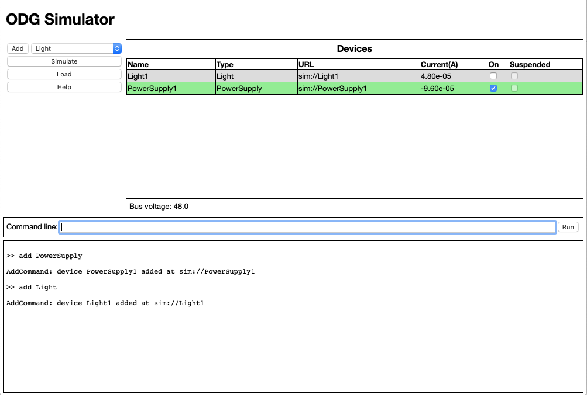

Operation
The simulator is a single page web app with all computation run in the user's browser. It is basically a command line app with some buttons for convenience. The simulator can always be restarted by just reloading the page which resets everything to a default state.

The table on the top right shows the devices currently defined in the simulator and is initially blank until some devices are added.
Basic Simulation
To conduct a very basic simulation, click the add button on the top left to add a Power Supply and then use the pull down next to it to select a Light, then click add again. This will create a very simple grid similar to the one shown in the diagram. A one-second simulation is automatically initiated after every event so the devices table shows the current state of the grid.
Devices Table
The devices table shows the properties of each device including the current between the device in the grid. Power from a device such as a power supply is shown as a negative current. Power into a load device is shown as a positive current.
Some devices are managed devices and have an on/off property shown in the on column. Clicking the text box in this column, if it exists, will change the state of the device and change the current flow through the device. A device that is off normally imposes a high value resistor between the device and the bus.
Note that there is always a high value resistor across the bus to create some load on power sources. Turning a power source off creates a voltage divider between the off resistor of the power source and the bus load resistor so an unexpected bus voltage may be observed.
The on/off state of managed devices is shown in their background color, gray for off and green when the device is on. Managed devices may also be in a suspended state which is shown in yellow and described in the Bus Management page.